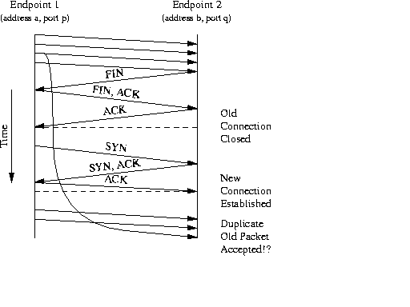

TIME-WAIT TEST
Rajesh Balla
Wei Cheng
Corinne Rhodes
Saif Suterwala
PURPOSE:
The purpose of this test is to figure out the need of the Time-Wait State. We’ll carry out this test for different scenarios for a computer that is in a Time-Wait State and for one that is not in a Time-Wait State.
DIFFERENT SCENARIOS:
We carry out the test by sending packets
NOTE: We test every scenario for two options:
The scenarios are:
1. Send a packet with the SYN flag set
2. Send a data packet
3. Send a FIN
4. Send a RESET
5. Send a SYN-ACK
For every packet sent, we use tcpdump to determine how the computer responds and why. The two computers we used for our experiment were both Red Hat Linux 6.2.
RESULTS:
|
TIME-WAIT |
CLOSED |
|||
|
with an appropriate SEQ-NUM |
with an arbitrary SEQ-NUM |
with an appropriate SEQ-NUM |
with an arbitrary SEQ-NUM |
|
|
SCENARIO 1 |
Sent RESET |
Sent RESET |
Sent RESET* |
Sent SYN-ACK* |
|
SCENARIO 2 |
Ignores the packet |
Ignores the packet |
Sent RESET |
Sent RESET |
|
SCENARIO 3 |
Ignores the packet |
Ignores the packet |
Sent RESET |
Sent RESET |
|
SCENARIO 4 |
Ignores the packet |
Ignores the packet |
Ignores the packet |
Ignores the packet |
|
SCENARIO 5 |
Sent RESET |
Sent RESET |
Sent RESET |
Sent RESET |
* We observed the computer in the closed state sent two SYN-ACK packets before it got the expected RESET from the computer in the TIME-WAIT state, in repeated experiments. We think the reason for this behavior is that the first SYN-ACK packet timed-out and therefore had to be retransmitted. To see if this behavior is related only to the Linux implementation of TCP, we ran this portion of the experiment on a FreeBSD machine. We observed that we received two SYN-ACKS for a single SYN packet, for both the cases in the scenario.
We plan to explore the TCP implementation in the Linux operating system to see if we can discover a reason for this behavior.
CONCLUSIONS:
SCENARIO 1:
A SYN packet is used to initiate a connection. The port allocated to the end-point in the TIME-WAIT state is still in use, therefore any attempt to establish a new connection to that port is denied. The port of the end-point in the CLOSED state is not in use; however, since the sequence number of the SYN packet has already been used, the connection attempt is refused. (check this last sentence for truth) When the sequence number of the SYN packet is random, the computer accepts the connection as a valid request and responds with a SYN-ACK, which is the appropriate response.
SCENARIO 2:
This scenario simulates a data packet that has been delayed in the network. The TIME-WAIT state exists so any stray packets in the network associated with that connection will be absorbed. This fact is best demonstrated in this scenario because the end-point in the TIME-WAIT state absorbs the data packet transmitted from our program. However, the end-point in the CLOSED state responds with a RESET because it has no connection that matches the destination port indicated in the TCP header.
SCENARIO 3:
A FIN packet is used to terminate an established connection. The end-point in the TIME-WAIT state ignores this type of packet regardless of the sequence number while the end-point in the CLOSED state sends a RESET because it has no corresponding socket to match the port information in the TCP header.
SCENARIO 4:
The RESET packet is used when a computer receives a packet that is not associated with any connection. By sending a RESET signal, the source is telling the destination "I have no connection information for you, so close your connection." When a computer receives a RESET it deletes any information it has about the connection in question.
In all four cases, the RESET packet we sent was ignored. A RESET packet requires no response.
SCENARIO 5:
The SYN-ACK packet is part of the three-way handshake to establish a connection. Each SYN-ACK packet we sent was responded to with a RESET. Again, this is expected behavior since the recipient of the SYN-ACK knows it did not send a SYN to correspond with the SYN-ACK packet.
The Need for the TIME-WAIT state[1]:
This Section discusses the TIME-WAIT state and its use in TCP in some detail.
Figure 1: The Problem Addressed by the TIME-WAIT State

The Function of TIME-WAIT
The purpose of TIME-WAIT is to prevent delayed packets from one connection being accepted by a later connection. Concurrent connections are isolated by other mechanisms, primarily by addresses, ports, and sequence numbers.
The TIME-WAIT state avoids the situation depicted in Figure 1. Arrows represent packets, and endpoints' time lines run down the page. Packets are labeled with the header flags that are relevant to connection establishment and shutdown; unlabelled packets carry only data.
Specifically:
If such a packet appears, there is no way for the endpoints in the second connection to determine that the delayed packet contains data from the first connection.
This confusion can only exist if a second connection from (address a, port p) to (address b, port q) is active while duplicate packets from the first connection are still in the network. TCP avoids this condition by blocking any second connection between these address/port pairs until one can assume that all duplicates must have disappeared.
Connection blocking is implemented by holding a TIME-WAIT TCB at one endpoint and checking incoming connection requests to ensure that no new connection is established between the blocked addresses and ports. Because only a connection between the same endpoints can cause the confusion, only one endpoint needs to hold the state. The TCB is held for twice the maximum segment lifetime (MSL).
The MSL is defined as the longest period of time that a packet can remain undelivered in the network. Originally, the TTL field of an IP packet was the amount of time the packet could remain undelivered, but in practice the field has become a hop count. Therefore, the MSL is an estimate rather than a guarantee. The Internet host requirements document suggests a using 2 minutes as the MSL, but some implementations use values as small as 30 seconds. Under most conditions waiting 2 x MSL is sufficient to drain duplicates, but they can and do arrive after that time. The chance of a duplicate arriving after 2 x MSL is greater if MSL is smaller.
REFERENCES:
1. The TIME-WAIT state in TCP and Its Effect on Busy Servers
Theodore Faber, Joe Touch, Wei Yue
University of Southern California/Information Sciences Institute.